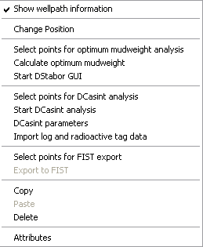

All wellpaths are leafs of the wellpaths branch in the model tree.
Use insert
wellpath to insert a new vertical wellpath graphically or by entering
lateral coordinates.
Use insert deviated wellpath to import a new deviated wellpath from a file.
Right-clicking on wellpath displays the following context sensitive menu:

| Show wellpath information | Show Formation names with the wells in 3D views. |
| Change Position | For vertical wells only: manually select a new lateral position by clicking on a part of the mesh in top view. |
| Select points for optimum mudweight analysis | To select AHD levels for which a DStabor analysis should be carried out. |
| Calculate optimum mudweight |
|
| Start DStabor GUI | The user needs to make a selection of the Preselected Points (one, more or all). With one point the standard DStabor GUI can be opened. For multiple points an Excel spreadsheet will be opened where the user can modify settings and material properties and call DStabor via a macro. |
| Select points for DCasint analysis | Under construction... |
| Start DCasint analysis |
|
| DCasint parameters |
|
| Import log and radioactive tag data |
|
| Select points for FIST export | Select points for a risk analysis for sand production through perforations. Only points with "Material Properties" set to "Sand" will be applied. |
| Export to FIST | Selected points, material properties and stress field will be sent to FIST (if installed) for a sanding analysis. |
|
Copy |
|
|
Deletes a
wellpath |
|
|
To view or
change the
attributes of the wellpath |